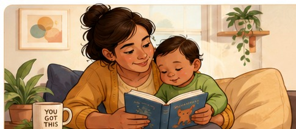

🔎 Notice the concept
A caregiver calmly rocks a crying infant until the infant’s body relaxes. Which idea is best illustrated?
Explore autonomy, temperament, emotion, attachment, and the social contexts that shape early development.

During a child development center observation, Maya watches a toddler stand in front of a low mirror. At first, the child smiles and waves at the “baby” in the reflection. Then the caregiver points to a sticker on the toddler’s shirt and says, “That’s you!” The toddler looks down, touches the sticker, and laughs.
Later, Maya sees the same toddler insist on carrying a small cup to the table without help. The caregiver stays close, offers encouragement, and lets the child try.
A caregiver calmly rocks a crying infant until the infant’s body relaxes. Which idea is best illustrated?
Match each concept with its best description.
An infant crawls toward a new toy, pauses, looks back at the caregiver, sees the caregiver smile, and continues. Which two concepts are most visible?
One important idea I am taking from this chapter is that infants and toddlers develop socially and emotionally through…
There is no single correct response. OpenStax emphasizes that social-emotional development grows through the interaction of the child’s emerging abilities, temperament, relationships, culture, and everyday experiences.
Did your response include both the child and the caregiving environment? Infants and toddlers are active participants, but they still depend heavily on adults for co-regulation, security, and support.
Responsive care does not require every family to follow one identical routine. Warmth, reliability, cultural context, safe limits, and a good fit with the child all matter.